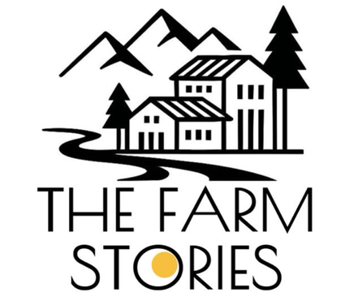

Story No. 002 enters verification
A third-generation coffee estate in Coorg has approached the Library. Our readers are on the slopes; papers first, poetry later.
See the shelfand so the story begins…
Chapter I
Years before this platform had a name, someone planted mango trees on a gentle slope in the Nilgiris foothills. The trees grew. The stream kept its course.
turn the page ›
“Good land, told well, lasts generations.”
A note to the reader
This is not a property website. It is a shelf of true stories — each farm verified, documented and kept like a book.
Nothing is listed until its story checks out.
turn the page ›
The Farm Stories presents
turn the page ›

Click, tap or swipe to open the book
India's keeper of farm stories
Verified farms, living communities and seasonal retreats — every estate documented like a book, and nothing listed until its story checks out.
Why we keep farms the way libraries keep first editions — slowly, honestly and for good.
Years before this platform had a name, someone planted mango trees on a gentle slope in the Nilgiris foothills. The trees grew. The stream kept its course. And when we found the orchard, we made a decision that became our founding rule: we would never sell a farm whose story we couldn't tell in full.
The managed farmland category is full of promises — renders of orchards that don't exist yet, communities that never gather, reports that stop arriving after registration. We decided to be the opposite of that. This is not a promise. These mangoes exist. The trees are decades old and already in harvest. The families are real. The documents are open.
We would rather lose a sale than lose your trust. That single sentence is our entire business plan.
Every farm is a chapter. Every project is a book. Take one down from the shelf and open it.
Fourteen farms approached the Library this season. One was admitted.
Mango Meadows as a handcrafted model — scroll, and the land turns gently beneath the light. Terrain, trees, the stream, the pavilion; all of it real, all of it already there.
The Mango Meadows masterplan, drawn like the endpaper map of a novel — every plot a page you can hold. Zoom, wander, compare, and mark the ones that speak to you.
drag to wander · scroll or pinch to lean closer
Farm life is better entered together — tables under trees, harvest mornings, slow weekends. Tap a gathering to hold a place.
Before anyone owns a farm with us, we'd rather they sit at one of our tables. Walk the orchard at first light. Press oil, pick fruit, do nothing at all. The community is not something we advertise — it's something you meet.
“You don't visit a farm. You enter its story — and some people simply decide to stay in it.”
Gatherings are small and unhurried. Every one of them is written into the farm's book afterwards.
Mango Meadows, Agali · saplings, first rain & a long lunch
Mango Meadows, Agali · one table, open sky, local kitchen
Two days, no itinerary · verandah, orchard walks & the farm's book
Mango Meadows, Agali · the season's first picking, now in the record
Owners don't get dashboards. They get a journal — drone flights, harvest counts, the agronomist's notes and every invoice, written into one record you can open from anywhere.
Mango Meadows · plot 07 · a sample page
“Good land, told well, lasts generations.”
June, at the orchard
The season, in crates
Every crate counted, every kilogram in the record — and the first pick always goes to the village.
The documents drawer
Every claim on these pages has a document behind it. Ask, and it's yours to read.
The Community
The families' circle — photographs from the verandah, harvest counts and the occasional recipe. Owners and invited guests only.
The Farm Diary · Agri-tech
Soil and water sensors, satellite passes and drone documentation — the old farm diary, kept with better instruments. Arriving first at Mango Meadows.
The latest pages — what's growing, what's gathering, and what's being written about us.
A third-generation coffee estate in Coorg has approached the Library. Our readers are on the slopes; papers first, poetry later.
See the shelfMango Meadows completed its first owner-season picking. Crates counted, families fed, and page 14 added to the estate book.
Open the journalSaplings go into the ground on the 18th, first rain permitting. A long lunch follows, as it should.
Request a placeA note on our verification standard — why fourteen farms approached us this season, and why only one was admitted.
Our standardThe best way to know a farm is to stand in it. Come for a morning — walk the orchard, read the documents, meet a family or two. No pitch, no pressure. If the land speaks to you, you'll know.